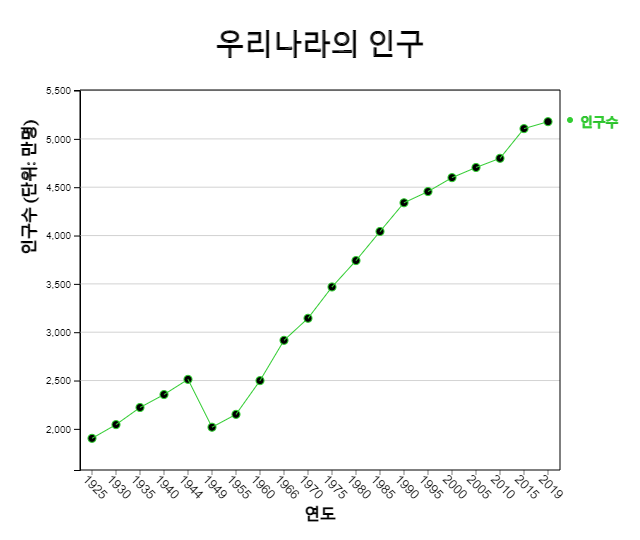

⭐ 생각열기 |
초등학교 한 학급 학생 20명을 대상으로 좋아하는 운동을 조사한 도수분포표가 다음과 같다.
[표 2.1] 좋아하는 운동의 도수분포표
|
||||||||||||
💎 탐구 |
좋아하는 운동이 어떠한 것인지 쉽게 관찰할 수 있는 그래프에는 어떠한 것이 있을까? |
2. 질적 자료의 그래프
📊 🍕 🌈 ⛅2.1 막대그래프 – 원그래프 – 띠그래프 |
- 범주형 자료인 경우에 막대그래프, 원그래프, 띠그래프를 그려 분석한다. - 시간에 따라 측정된 자료는 꺽은선그래프를 그려 분석한다. - 단어로 이루어진 문자 형태의 자료는 단어구름을 그려 분석한다. |
2.1 막대그래프 – 원그래프 – 띠그래프
학생들에게 좋아하는 운동을 물으면 '축구', '농구', '야구', ... 등의 대답을 얻을 수 있는데 이를 질적 자료라 한다. 대개의 질적 자료는 그 값이 범주를 의미하여 범주형 자료로 부르기도 한다. 질적 자료는 [표 2.1]과 같이 좋아하는 운동의 학생수를 세어 도수분포표로 만든 후 막대그래프, 원그래프, 띠그래프 등을 이용하여 그 특징을 살펴본다.
막대그래프는 각 범주별 자료의 도수를 직사각형 막대의 높이로 나타낸 것이다. 범주형 자료라는 것을 강조하기 위하여 막대사이의 간격을 띄어 놓는다.
<그림 2.1> 좋아하는 운동의 막대그래프
원그래프는 각 범주의 도수가 전체 자료에서 차지하는 비율을 원조각으로 나누어 표시한 그래프이다. 비율의 비교를 잘 할 수 있도록 시계 방향으로 가장 큰 범주의 원조각부터 순서대로 차례로 그린다.

<그림 2.2> 좋아하는 운동의 원그래프
띠그래프는 원그래프의 변형 형태로 각 범주의 도수가 전체 자료 중에서 차지하는 비율을 사각형 조각으로 나누어 표시한 그래프이다. 범주의 값이 가장 큰 순서부터 정렬할 수도 있으나 원그래프와 구별하기 위하여 자료의 범주 순서대로 사각형 조각을 그린다.

<그림 2.3> 좋아하는 운동의 띠그래프
『eStat』 소프트웨어를 이용하여 위의 그래프를 그려보자.
🎲 실습 2.1
『eStatM』을 이용하여 좋아하는 운동에 대해 막대그래프, 원그래프, 띠그래프를 그리고 어느 운동을 많이 좋아하는지 관찰하라풀이
다음 『eStatM』 의 화면에서 운동의 이름을 '범주'에 학생수를 '도수'에 입력하고 '주 제목', '세로축 제목', '가로축 제목'에 제목을 입력한다.
[막대그래프] 버튼을 클릭하면 <그림 2.1>과 같은 막대그래프가 나타난다. 원하는 범주의 색을 선택하여 다시 [막대그래프를] 그릴 수도 있다.
| Main Title | |||
| y title | x title | ||
| Category | Frequency | Relative Freq. % | Color | Emoji | |
| 1 | |||||
| 2 | |||||
| 3 | |||||
| 4 | |||||
| 5 | |||||
| 6 | |||||
| 7 | |||||
| 8 | |||||
| 9 | |||||
| Sum |
<그림 2.4> 좋아하는 운동의 자료 입력
제일 오른쪽에 각 운동별 아이콘을 선택하고 그래프 아래의 '이모티콘'을 체크하면 <그림 2.5>와 같은 그래프가 나타난다.

<그림 2.5> 각 범주의 이모티콘이 표시된 막대그래프
'도수'를 체크하면 막대 위에 <그림 2.6>과 같이 도수를 표시할 수도 있다.
<그림 2.6> 도수가 표시된 막대그래프
그래프 아래 (정렬) 선택사항을 이용하여 <그림 2.7> <그림 2.8>처럼 막대를 도수의 내림차순 또는 오름차순으로 정렬할 수 있다.

<그림 2.7> 도수의 내림차순 막대그래프

<그림 2.8> 도수의 오름차순 막대그래프
[원그래프] 버튼을 클릭하면 <그림 2.2>와 같은 원그래프가 나타난다.
[무지개그래프] 버튼을 클릭하면 <그림 2.3>과 같은 무지개그래프가 나타난다.
[띠그래프] 버튼을 클릭하면 <그림 2.4>와 같은 띠그래프가 나타난다.
🎲 실습 2.2
초등학생이 좋아하는 과일을 조사하였더니 다음과 같다. 『eStatM』을 이용하여 막대그래프를 그려보자.
[표 2.2] 초등학생들이 좋아하는 과일
| 과일 | 학생수 |
|---|---|
| 딸기 | 15 |
| 사과 | 10 |
| 바나나 | 25 |
| 포도 | 20 |
| 오랜지 | 10 |
| 토마토 | 2 |
| 수박 | 13 |
| 파인애플 | 5 |
풀이
|
왼쪽의 QR을 이용해 『eStatM』 메뉴에서 '막대그래프 – 원그래프 – 띠그래프'를 선택하면 <그림 2.9>와 같은 자료 입력창이 나타난다. '범주'와 '도수'를 입력하고 '주 제목'을 입력한 후 제일 오른쪽에 각 과일 아이콘을 선택한다. [막대그래프] 버튼을 클릭하고 그래프가 나타나면 그래프 아래의 '이모티콘'을 체크한다. 원하는 범주의 색을 선택하여 다시 [막대그래프를] 그릴 수도 있다 |
|
|
<그림 2.9> 좋아하는 과일의 자료 입력
<그림 2.10> 좋아하는 과일의 막대그래프
|


⏱ 과제 2.1
|
(우리나라 특별시/직할시 인구)
[표 2.3] 시도별 인구수 (출처: 통계청 단위: 만명)
|
⏱ 과제 2.2
|
(장래 희망직업)
[표 2.4] 초등학생들의 장래 희망직업
|
2.2 꺽은선그래프
⭐ 생각열기 |
1925년부터 2019년까지 대략 5년 간격으로 조사한 우리나라의 인구가 다음 표와 같다.
[표 2.5] 우리나라의 인구 (통계청)
|
||||||||||||||||||||||||||||||||||||||||||
💎 탐구 |
이렇게 시간에 따라 측정한 자료를 쉽게 관찰할 수 있는 그래프에는 어떠한 것이 있을까? |
시간에 따라 측정되는 자료는 꺾은선그래프를 이용하여 많이 관찰한다. 꺽은선그래프는 월 또는 연도같은 시간을 X축으로 하고 다른 변량의 값을 Y값으로 하여 XY평면에 각 자료를 점으로 표시한 후 이를 선으로 연결한 것이다. 막대그래프와 유사하나, 연도별 수출액 등의 경우에는 시간에 따른 자료의 변화를 관찰할 수 있다.

<그림 2.11> 우리나라 인구의 꺽은선그래프
우리나라의 인구수에 대한 꺽은선그래프를 관찰하면 1925년부터 1944년까지 증가하다가 태평양전쟁과 한국전쟁의 여파로 1949년과 1954년에 많이 감소되었음을 알 수 있다. 그 이후 50년대 후반 베이비붐 기간에 계속 인구가 많이 증가하다가 1990년 이후 증가추세가 완만하여지고 2015년 이후에 이 추세는 더욱 완만하여 지고 있다.
🎲 실습 2.3
『eStatM』을 이용하여 [표 2.5]의 우리나라 인구수에 대한 꺽은선그래프를 그리고 관찰하라풀이
『eStatM』의 '꺽은선그래프' 자료 입력창에서 '주 제목', '세로축 제목', '가로축 제목'을 입력하고 '꺽은선1'에 연도별 인구수, 그 옆에 변량명을 인구수, 'X'에 연도자료를 입력한다.
[실행] 버튼을 클릭하면 <그림 2.11>과 같은 꺽은선그래프가 나타난다. 데이터의 선 색을 선택하여 다시 꺽은선그래프를 그릴 수도 있다.
| Main Title | |||
| y title | x title | ||
| * Number of data ≤ 100 | 데이터 이름 | 선 색 | |
| 데이터 1 | |||
| 데이터 2 | |||
| 데이터 3 | |||
| 데이터 4 | |||
| X축 데이터 |
<그림 2.12> 꺽은선그래프의 자료 입력
동일한 시간에 관측된 여러 변량이 있을 경우 꺽은선그래프는 여러 변량을 동시에 한 그래프에 그릴 수 있다.
🎲 실습 2.4
『eStatM』을 이용하여 [표 2.6]의 우리나라 계절별 온도에 대한 봄, 여름, 가을, 겨울의 꺽은선그래프를 한 그래프에 그리고 관찰하라.
[표 2.6] 우리나라의 계절별 온도 (단위: 섭씨, 가상청)
| 연도 | 봄 | 여름 | 가을 | 겨울 |
|---|---|---|---|---|
| 1973 | 11.6 | 24.5 | 12.9 | -1.4 |
| 1974 | 10.8 | 22.4 | 13.0 | -0.1 |
| 1975 | 11.2 | 23.9 | 15.5 | 0.3 |
| 1976 | 10.9 | 22.6 | 12.5 | -1.7 |
| 1977 | 11.8 | 23.5 | 15.0 | 0.7 |
| 1978 | 11.7 | 24.7 | 14.3 | 2.2 |
| 1979 | 11.2 | 23.5 | 13.6 | -0.2 |
| 1980 | 11.0 | 22.1 | 13.4 | -2.3 |
| 1981 | 11.5 | 23.6 | 12.2 | -0.1 |
| 1982 | 12.0 | 23.4 | 14.3 | -0.2 |
| 1983 | 12.2 | 23.4 | 14.2 | -2.1 |
| 1984 | 10.7 | 24.3 | 13.8 | -0.6 |
| 1985 | 11.5 | 24.1 | 14.3 | -2.1 |
| 1986 | 11.4 | 22.9 | 12.6 | 1.2 |
| 1987 | 11.1 | 23.2 | 14.1 | 0.3 |
| 1988 | 11.0 | 23.6 | 13.6 | 1.7 |
| 1989 | 12.3 | 22.9 | 13.7 | 1.4 |
| 1990 | 11.7 | 24.3 | 15.2 | 0.2 |
| 1991 | 11.4 | 23.4 | 13.5 | 1.7 |
| 1992 | 11.6 | 23.2 | 13.4 | 1.1 |
| 1993 | 11.1 | 21.7 | 13.8 | 0.5 |
| 1994 | 11.8 | 25.3 | 14.8 | 0.8 |
| 1995 | 11.1 | 23.7 | 13.4 | -0.6 |
| 1996 | 10.6 | 23.5 | 14.1 | 0.5 |
| 1997 | 12.1 | 24.0 | 14.0 | 1.9 |
| 1998 | 13.4 | 23.1 | 15.4 | 1.6 |
| 1999 | 12.1 | 23.3 | 14.7 | 0.3 |
| 2000 | 11.6 | 24.2 | 13.7 | 0.3 |
| 2001 | 12.2 | 24.2 | 14.3 | 1.5 |
| 2002 | 12.7 | 23.1 | 12.5 | 0.9 |
| 2003 | 11.9 | 22.3 | 14.7 | 1.4 |
| 2004 | 12.2 | 24.0 | 14.7 | 0.5 |
| 2005 | 11.7 | 24.1 | 14.8 | -0.1 |
| 2006 | 11.5 | 23.6 | 15.1 | 2.4 |
| 2007 | 12.1 | 23.8 | 14.5 | 0.7 |
| 2008 | 12.5 | 23.7 | 15.1 | 1.7 |
| 2009 | 12.6 | 23.3 | 14.7 | 0.5 |
| 2010 | 10.8 | 24.9 | 14.5 | -0.7 |
| 2011 | 11.0 | 24.0 | 15.3 | -0.4 |
풀이
|
왼쪽의 QR을 이용해 『eStatM』 메뉴에서 '꺽은선그래프'를 선택하면 <그림 2.13>과 같은 자료 입력창이 나타난다. '주 제목', '세로축 제목', '가로축 제목'을 그림과 같이 입력하고 '꺽은선1'에서 '꺽은선4'까지 봄, 여름, 가을, 겨울의 온도를 입력하고, 그 옆에 변량명을 봄, 여름, 가을, 겨울, 'X'에 연도자료를 입력한다. [실행] 버튼을 클릭하면 <그림 2.14>와 같은 꺽은선그래프가 나타난다. 변량의 색을 선택하여 다시 꺽은선그래프를 그릴 수도 있다.
<그림 2.13> 계절별온도의 꺽은선그래프를 위한 자료 입력
<그림 2.14> 계절별 온도의 꺽은선그래프
계절별 평균기온의 꺽은선그래프를 살펴보면, 특히 겨울의 경우 평균기온이 점차로 높아지고 있음을 알 수 있다. |
⏱ 과제 2.3
|
1970년부터 2020년까지 10년마다 조사한 한국인의 평균수명이 다음 표와 같다. 『eStatM』을 이용하여 꺽은선그래프를 그려 특징을 알아보라.
[표 2.7] 한국인의 평균수명 (단위: 세, 통계청)
|
⏱ 과제 2.4
|
2001년부터 2020년까지 우리나라의 수출입 금액이 다음 표와 같다. 『eStatM』을 이용하여 꺽은선그래프를 그려 특징을 알아보라.
[표 2.8] 우리나라의 연도별 수출입 금액 (단위: 억불, 관세청)
|
2.3 단어구름
⭐ 생각열기 |
다음은 4차 산업혁명에 대한 위키백과의 설명이다.
[표 2.9] 4차 산업혁명에 대한 위키백과의 설명
|
|
💎 탐구 |
과연 4차 산업혁명 설명에는 어떠한 단어가 중요할까? |
단어구름은 문자 자료의 정보를 시각적으로 표현한 것이다. 단어구름은 주어진 문장에 나타나는 모든 단어들의 빈도수를 조사하여 많이 나타난 단어의 중요성을 글꼴 크기, 기울기 또는 색상으로 잘 보이도록 표시한다. <그림 2.15>는 위의 4차 산업혁명 설명에 대한 단어 구름이다.

<그림 2.15> 4차 산업혁명 설명에 대한 단어 구름
단어구름은 가장 두드러진 단어를 빠르게 인식하여 상대적인 중요도를 결정하는 데 유용하다. 예를 들면 정치 연설의 중요한 주제를 시각화 하든지, 소셜 미디어 소프트웨어에서 한 단어와 관련된 항목의 하이퍼링크를 결정하는 도구로 사용할 수 있다. 단어 구름의 중요 단어는 특정 웹 사이트와 관련된 검색 엔진 마케팅 용어로 사용되기도 한다.
단어구름 생성에는 많은 알고리즘이 있는데 eStat는 d3 오픈 소프트웨어의 알고리즘을 채택했다. d3는 한글에 대한 불필요한 용어를 제거하는 알고리즘은 아직 없어 정확한 단어구름을 제공하지는 못한다. 현재 단어구름은 단어 사이의 연관성을 표시할 수 있는 알고리즘 개발이 진행되고 있다.
🎲 실습 2.3
『eStatM』을 이용하여 [표 2.9]의 4차 산업혁명에 대한 단어구름을 그려 관찰하라풀이
『eStatM』 의 '단어구름' 자료 입력 창에 [표 2.9]의 문장을 복사한 후 [실행] 버튼을 클릭하면 <그림 2.15>와 같은 단어 구름이 나타난다.
<그림 2.16> 단어구름을 위한 자료 입력
⏱ 과제 2.3
|
다음은 통계학에 대한 위키백과의 설명이다. 『eStatM』을 이용하여 단어구름을 그려 관찰하라
[표 2.10] 통계학에 대한 위키백과의 설명
|
⏱ 과제 2.4
|
다음은 다음은 존 에프 케네디 미국 대통령의 취임사 중 일부이다. 이 취임사에 대해 단어구름을 작성하여 주요 단어를 분석하라.
[표 2.11] 존 에프 케네디 미국 대통령의 취임사
|
연습문제
*** 답을 선택한 후 [제출] 버튼을 누르세요
2.1 다음과 같이 자료를 정리하여 만든 표를 무엇이라 부르는가?
| 성별 | 학생수 |
|---|---|
| 남 | 6 |
| 여 | 4 |
2.2 다음 중 질적 자료 분석에 사용되는 그래프는?
2.3 다음 중 질적 자료 분석에 사용되는 그래프가 아닌 것은?